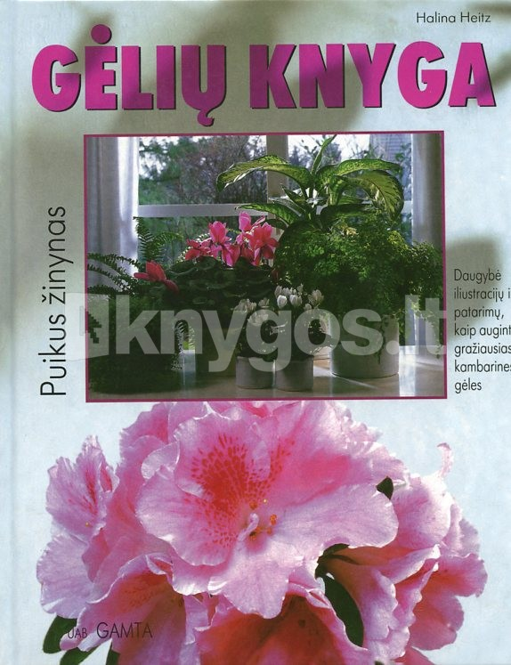

Welcome to knyga
Vaikystės šešėliai - Žydrūnas Sadauskas | Patogupirkti.lt
2020.10.29 10:15
0 Prisijungti Akcijos KNYGŲ IŠPARDAVIMAS Rask savąjį laimikį! Nuolaidos nuo -40% rinktinėms knygoms! DIDŽIOJI KNYGŲ IŠPARDUOTUVĖ Meilės romanai, detektyvai, trileriai, fantastika iki 5€ Visos knygos iki 1 euro DIDYSIS KNYGŲ VAIKAMS IŠPARDAVIMAS DOVANŲ KUPONAI KNYGŲ KOMPLEKTAI Visos knygos iki 2 eurų Grožinė literatūra iki 2 eurų Knygos vaikams iki 2 eurų Dalykinė literatūra iki 2 eurų REKOMENDUOJAMOS NAUJOS KNYGOS REKOMENDUOJAMOS NAUJOS KNYGOS VAIKAMS IR PAAUGLIAMS Visos knygos iki 5 eurų Dalykinė literatūra iki 5 eurų Grožinė literatūra iki 5 eurų Knygos vaikams iki 5 eurų TOP pasiūlymas! Perkantiems daugiau kaip už 30€ - galimybė išsirinkti dovaną! Bestseleriai: perkamiausios knygos DOVANŲ IDĖJOS Nobelio laureatų ir literatūros klasikos knygos Knygos iki 3€ Šimtai knygų už PUSĘ KAINOS! Leidyklos „Liūtai ne avys" knygos -40% pigiau Leidyklos „Luceo" knygos nuo -40% pigiau! Leidyklos „Dvi tylos" knygos nuo -40% pigiau! Gal mums pakeliui? Atrask savo knygą ir pasinaudok nuolaidomis! Knygos visiems skoniams nuo -40% pigiau! Geriausias Helovyno vakarėlis... namuose su detektyvu! Teminiai išpardavimai Lietuvių literatūros IŠPARDAVIMAS Mokomųjų knygų studentams IŠPARDAVIMAS Užsienio literatūros IŠPARDAVIMAS Knygų 3-5 metų vaikams IŠPARDAVIMAS Knygų 6-8 metų vaikams IŠPARDAVIMAS Knygų paaugliams ir jaunimui IŠPARDAVIMAS Istorijos knygų IŠPARDAVIMAS Knygų apie šeimą, vaikus, moters pasaulį IŠPARDAVIMAS Knygų apie protą, kūną ir dvasią IŠPARDAVIMAS Biografijų ir memuarų IŠPARDAVIMAS Verslo ir finansų knygų IŠPARDAVIMAS Meno, architektūros ir literatūros mokslo knygų IŠPARDAVIMAS Religijos knygų ir dvasinių skaitinių IŠPARDAVIMAS Visuomenės, politikos ir filosofijos knygų IŠPARDAVIMAS Fantastikos knygų IŠPARDAVIMAS Namų, sodo ir žemės ūkio knygų IŠPARDAVIMAS Detektyvų ir trilerių IŠPARDAVIMAS Knygų 0-2 metų vaikams IŠPARDAVIMAS Knygų apie sveikatą IŠPARDAVIMAS Kelionių, laisvalaikio ir sporto knygų IŠPARDAVIMAS Enciklopedijų ir žinynų IŠPARDAVIMAS Medicinos ir psichologijos knygų IŠPARDAVIMAS Knygų apie madą, muzika, teatrą ir kiną IŠPARDAVIMAS Knygų apie mokslo populiarinimą ir gamtą IŠPARDAVIMAS Knygų 9-12 metų vaikams IŠPARDAVIMAS Meilės ir erotinių romanų IŠPARDAVIMAS Knygų apie maistą ir gėrimus IŠPARDAVIMAS Visos kategorijos KNYGŲ IŠPARDAVIMAS Dalykinė literatūra Albumai Albumų IŠPARDAVIMAS Albumai apie Lietuvą Albumai "Welcome to Lietuva" Albumai apie Lietuvą anglų kalba Albumai apie Lietuvą kitomis kalbomis Meno albumai Biografijos. Atsiminimai Biografijų ir memuarų IŠPARDAVIMAS Asmenybės Karo atsiminimai. Tremtis. Partizanai. Holokaustas Kultūra, filosofija Kinas, teatras Mada, sportas Mokslas Muzika, menas, architektūra Literatūra Religija, teologija Visuomenė, politika Kitos biografijos ir atsiminimai Enciklopedijos. Žinynai Enciklopedijų ir žinynų IŠPARDAVIMAS Enciklopedijos Visuotinės lietuvių enciklopedijos Žinynai Etnografija. Tautosaka. Mitologija Knygų apie tautosaką, mitologiją ir etnografiją IŠPARDAVIMAS Etnografija Lietuvių kalbos tarmės ir šnektos Mitologija Tautosaka Istorija Istorijos knygų IŠPARDAVIMAS II-asis pasaulinis karas Archeologija Europos šalių istorija Dokumentai Istorija ir visuomenė Istoriografija Kitų šalių ir regionų istorija LDK istorija (XIII a. - 1795 m.) Lietuvos istorija Miestų ir kraštų istorija Serija "Lietuvos valsčiai" Tautų istorija Kalbų mokymasis Knygų ir CD kalbų mokymuisi IŠPARDAVIMAS Anglų kalba ir gramatika Italų kalba ir gramatika Ispanų kalba ir gramatika Lietuvių kalba ir gramatika Lotynų kalba ir gramatika Prancūzų kalba ir gramatika Norvegų kalba ir gramatika Rusų kalba ir gramatika Švedų kalba ir gramatika Vokiečių kalba ir gramatika Kitos kalbos, jų gramatika Kelionės. Laisvalaikis. Sportas Kelionių, laisvalaikio ir sporto knygų IŠPARDAVIMAS Atlasai ir žemėlapiai Kelionių įspūdžiai Kelionių vadovai po Lietuvą Kelionių vadovai po užsienio šalis Laisvalaikis Spalvinimo knygos suaugusiems Sportas Kompiuterija Kompiuterijos knygų IŠPARDAVIMAS Internetas, tinklalapiai Kompiuteriai Microsoft Office: Word, Excel ir kitos Microsoft Windows Programavimas: C++, Turbo Paskalis... Vaizdai, grafika, animacija Kitos kompiuterijos knygos Mada. Muzika. Scena. Ekranas Knygų apie madą, muzika, teatrą ir kiną IŠPARDAVIMAS Kinas, televizija, radijas Mada Muzika, teatras, šokis Maistas ir gėrimai Knygų apie maistą ir gėrimus IŠPARDAVIMAS Kokteiliai ir gėrimai Receptų knygos Medicina ir psichologija Medicinos ir psichologijos knygų IŠPARDAVIMAS Anatomija Bendroji medicinos praktika Endokrinologija Farmacija. Farmakologija Kardiologija Neurologija Onkologija Pediatrija Psichologija, psichiatrija Slauga, kineziterapija, reabilitacija Urogenitalinė sistema Veterinarija Kitos medicinos knygos Menas. Architektūra. Literatūros ir kalbos mokslas Meno, architektūros ir literatūros mokslo knygų IŠPARDAVIMAS Architektūra Dailė, skulptūra, dekoratyvus menas Fotografija Literatūros ir kalbos mokslas Meno kritika, meno istorija Mokomoji literatūra studentams Mokomųjų knygų studentams IŠPARDAVIMAS Aplinkos inžinerija ir kraštotvarka Apranga. Siuvimas. Mezgimas Apskaita Biologija. Chemija Edukologija. Pedagogika. Andragogika Elektros ir elektronikos inžinerija Energetika ir termoinžinerija Ergonomika. Civilinė sauga Filosofija. Logika Finansai ir investicijos Fizika. Astronomija Geografija. Geologija Informatika. Kompiuterija Inžinerinė grafika Komunikacija. Žiniasklaida Kūno kultūra. Choreografija Lietuvių kalba ir literatūra Maisto technologija Marketingas. Rinkodara Matematika. Statistika Mechanika. Mašinos Medicina Muzika. Vizualusis menas Psichologija. Psichiatrija Sociologija. Socialinis darbas Statyba. Architektūra Tarptautiniai santykiai. Politika Transporto inžinerija Turizmas. Viešbučių administravimas Užsienio kalbos Vadyba ir administravimas. Logistika Verslas. Ekonomika Kitos studijos Finansai ir investicijos Mokslo populiarinimas. Gamta Knygų apie mokslo populiarinimą ir gamtą IŠPARDAVIMAS Gamta Mokslo populiarinimo knygos Namų, sodo ir žemės ūkis Namų, sodo ir žemės ūkio knygų IŠPARDAVIMAS Naminiai gyvūnai Namų statyba, įrengimas, priežiūra ir dizainas Rankdarbių ir mezgimo knygos Sodininkystė, daržininkystė, augalininkystė Žemės ūkis Natos, dainynai ir muzikos DVD Natų ir dainynų IŠPARDAVIMAS Dainelės su natomis vaikams Natos ir dainynai Protas, kūnas ir dvasia Knygų apie protą, kūną ir dvasią IŠPARDAVIMAS Astrologija ir ezoterika Bendravimo menas, kūno kalba Burtai. Kortos. Sapnai. Numerologija. Chiromantija Saviugda Gyvenimas Anapus. Reinkarnacija Meditacija, hipnozė, joga Minčių ir aforizmų knygos Nerimo, streso ir pykčio valdymas Populiarioji psichologija Protas, intelektas, atmintis Rytų išmintis Sėkmės istorijos Religija ir teologija Religijos knygų ir dvasinių skaitinių IŠPARDAVIMAS Biblija arba Šventasis Raštas Dvasiniai skaitiniai Krikščionybė Kitos religijos Malda Religijos studijos Serija - Siekiantiems begalybės Šventieji ir jų gyvenimai Sveikata Knygų apie sveikatą IŠPARDAVIMAS Dietos. Kaip numesti svorio Mūsų kūnas. Mankšta. Masažas Pagalba sau. Gydomės namuose Sveika gyvensena Sveika mityba Serija "Sveikatos receptai" Vaistiniai augalai Kitos knygos apie sveikatą Šeima. Vaikai. Moters pasaulis Knygų apie šeimą, vaikus, moters pasaulį IŠPARDAVIMAS Knygos apie seksą Knygos moterims Lyčių tarpusavio santykiai Nėštumas, gimdymas ir kūdikio priežiūra Vaikų ugdymas ir auklėjimas Teisė Teisės knygų IŠPARDAVIMAS Administracinė teisė Baudžiamoji ir bausmių vykdymo teisė Civilinė teisė Darbo teisė Konstitucinė teisė Konstitucinė jurisprudencija Tarptautinė ir Europos Sąjungos teisė Teisiniai žodynai Kita teisinė literatūra Verslas. Finansai Verslo ir finansų knygų IŠPARDAVIMAS Apskaita Asmeniniai finansai Gamyba Lyderystė Logistika Marketingas Pardavimai Vadybos knygos Vadybinės minties kristalai: ESMĖ Viešasis sektorius Kitos verslo knygos Visuomenė. Politika. Kultūra. Filosofija Visuomenės, politikos ir filosofijos knygų IŠPARDAVIMAS Filosofija Kultūra Politika Visuomenė Žodynai Žodynų IŠPARDAVIMAS Anglų kalbos žodynai Italų kalbos žodynai Ispanų kalbos žodynai Lietuvių kalbos žodynai Prancūzų kalbos žodynai Rusų kalbos žodynai Vokiečių kalbos žodynai Kitų užsienio kalbų žodynai Specializuoti žodynai Grožinė literatūra Detektyvai. Trileriai. Siaubo romanai Detektyvų ir trilerių IŠPARDAVIMAS Klasikiniai detektyvai ir trileriai Rusų detektyvai ir trileriai Skandinavų detektyvai ir trileriai Šiuolaikiniai detektyvai ir trileriai Fantastika Fantastikos knygų IŠPARDAVIMAS Maginė fantastika Mokslinė fantastika Lietuvių literatūra Lietuvių literatūros IŠPARDAVIMAS Eilėraščiai ir dramos Klasikinė lietuvių literatūra Šiuolaikinė lietuvių literatūra Tikros istorijos Audioknygos Meilės ir erotiniai romanai Meilės ir erotinių romanų IŠPARDAVIMAS Erotiniai romanai Klasikiniai užsienio autoriai Lietuvių autoriai Magiškos meilės istorijos Serija "Svajonių romanai" Šiuolaikiniai užsienio autoriai Užsienio literatūra Užsienio literatūros IŠPARDAVIMAS Nuotykių ir istoriniai romanai Eilėraščiai ir dramos Eseistika ir publicistika Klasikinė užsienio literatūra Šiuolaikinė užsienio literatūra Tikros istorijos Knygos vaikams 0-2 metų vaikams Knygų 0-2 metų vaikams IŠPARDAVIMAS Kartoninės knygutės Knygos-žaislai Knygutės su garsais Lytėjimo knygutės Užduočių knygelės 3-5 metų vaikams Knygų 3-5 metų vaikams IŠPARDAVIMAS Dainų knygelės su natomis Eilėraščiai 3-5 metų vaikams Kartoninės knygutės Knygos apie Kakę Makę Knygos-žaislai Knygutės apie Kalėdas Knygos su garsais Lipdukų ir spalvinimo knygos Pasakos Skaitome kartu su vaiku Užduočių knygelės 6-8 metų vaikams Knygų 6-8 metų vaikams IŠPARDAVIMAS Dainų knygelės su natomis Eilėraščiai 6-8 metų vaikams Grožinė lietuvių autorių literatūra Grožinė užsienio autorių literatūra Mokomojo ir ugdomojo pobūdžio knygos Knygos apie Džeronimą Stiltoną Komiksai Pasakos Pažintinė ir informacinė literatūra Religija ir tikyba vaikams Sakmės, padavimai, liaudies kūryba Užduočių, galvosūkių, lipdukų ir spalvinimo knygos Kitos knygos Paaugliams ir jaunimui Knygų paaugliams ir jaunimui IŠPARDAVIMAS Detektyvai, trileriai Fantastika, fantasy Klasikinė literatūra Knygos mergaitėms ir merginoms Pažintinė ir informacinė literatūra Kitos knygos paaugliams ir jaunimui Vadovėliai ir leidiniai mokyklai Serija "Mažos didelės knygos" Serija "Mokyklos biblioteka" Lietuvių kalba ir literatūra 4-6 kl. Lietuvių kalba ir literatūra 7-9 kl. Lietuvių kalba ir literatūra 10-12 kl. Kiti vadovėliai, pagalbiniai leidiniai 10-12 kl. Medžiaga mokytojams 1-4 kl. Kiti vadovėliai ir pagalbiniai leidiniai Vadovėliai, pagalbiniai leidiniai 1-3 kl. Kiti vadovėliai, pagalbiniai leidiniai 4-6 kl. Užsienio kalbos 7-9 kl. Kiti vadovėliai, pagalbiniai leidiniai 7-9 kl. Užsienio kalbos 10-12 kl. Egzaminams Medžiaga mokytojams 5-8 kl. Medžiaga mokytojams 9-12 kl. Ikimokyklinukams Kitos knygos mokytojams Serija "Mokinio skaitiniai" ir "Literatūros skaitiniai" Vadovėlių ir leidinių mokyklai IŠPARDAVIMAS Kalendoriai. Užrašinės Kalendoriai Užrašų knygelės Dėlionės. Žaidimai Dėlionės 1-3 metų vaikams 4-6 metų vaikams nuo 7 iki 99 metų Žaidimai 1-3 metų vaikams 4-6 metų vaikams nuo 7 iki 99 metų CD, DVD CD, DVD vaikams Filmai vaikams DVD Muzika vaikams CD Pasakos CD Informaciniai ir mokomieji CD Informacinių ir mokomųjų CD IŠPARDAVIMAS CD moksleiviams CD verslui Informaciniai CD Kalbų mokymosi CD Kompiuterinio raštingumo CD Žodynai CD Kiti CD Muzika Dainuojamoji poezija Folkloras Koncertai DVD Muzikos DVD Originalūs lietuvių kompozitorių kūriniai Pop ir Rock atlikėjo ar grupės albumas Pop ir Rock atlikėjų ar grupių albumas Audio knygos Kita muzika Vaidybiniai ir dokumentiniai filmai (DVD) Vaidybiniai filmai (DVD) Dokumentiniai filmai (DVD) Rusų kino klasika (DVD) KNYGŲ IŠPARDAVIMAS Rekomenduojamos naujos knygos Populiariausios knygos Visos serijos Visi autoriai Visos leidyklos Knygų blogas 0 Prekių krepšelis yra tuščias Nemokamas
pristatymas
nuo 15 € * Prisijungti Visos kategorijos KNYGŲ IŠPARDAVIMAS Dalykinė literatūra Albumai Biografijos. Atsiminimai Enciklopedijos. Žinynai Etnografija. Tautosaka. Mitologija Istorija Kalbų mokymasis Kelionės. Laisvalaikis. Sportas Kompiuterija Mada. Muzika. Scena. Ekranas Maistas ir gėrimai Medicina ir psichologija Menas. Architektūra. Literatūros ir kalbos mokslas Mokomoji literatūra studentams Mokslo populiarinimas. Gamta Namų, sodo ir žemės ūkis Natos, dainynai ir muzikos DVD Protas, kūnas ir dvasia Religija ir teologija Sveikata Šeima. Vaikai. Moters pasaulis Teisė Verslas. Finansai Visuomenė. Politika. Kultūra. Filosofija Žodynai Grožinė literatūra Detektyvai. Trileriai. Siaubo romanai Fantastika Lietuvių literatūra Meilės ir erotiniai romanai Užsienio literatūra Knygos vaikams 0-2 metų vaikams 3-5 metų vaikams 6-8 metų vaikams 9-12 metų vaikams Paaugliams ir jaunimui Vadovėliai ir leidiniai mokyklai Kalendoriai. Užrašinės Kalendoriai Užrašų knygelės Dėlionės. Žaidimai Dėlionės Žaidimai CD, DVD CD, DVD vaikams Informaciniai ir mokomieji CD Muzika Vaidybiniai ir dokumentiniai filmai (DVD) Visos serijos Visi autoriai Visos leidyklos Akcijos KNYGŲ IŠPARDAVIMAS Rask savąjį laimikį! Nuolaidos nuo -40% rinktinėms knygoms! DIDŽIOJI KNYGŲ IŠPARDUOTUVĖ Meilės romanai, detektyvai, trileriai, fantastika iki 5€ Visos knygos iki 1 euro DIDYSIS KNYGŲ VAIKAMS IŠPARDAVIMAS DOVANŲ KUPONAI KNYGŲ KOMPLEKTAI Visos knygos iki 2 eurų Grožinė literatūra iki 2 eurų Knygos vaikams iki 2 eurų Dalykinė literatūra iki 2 eurų REKOMENDUOJAMOS NAUJOS KNYGOS REKOMENDUOJAMOS NAUJOS KNYGOS VAIKAMS IR PAAUGLIAMS Visos knygos iki 5 eurų Dalykinė literatūra iki 5 eurų Grožinė literatūra iki 5 eurų Knygos vaikams iki 5 eurų TOP pasiūlymas! Perkantiems daugiau kaip už 30€ - galimybė išsirinkti dovaną! Bestseleriai: perkamiausios knygos DOVANŲ IDĖJOS Nobelio laureatų ir literatūros klasikos knygos Knygos iki 3€ Šimtai knygų už PUSĘ KAINOS! Leidyklos „Liūtai ne avys" knygos -40% pigiau Leidyklos „Luceo" knygos nuo -40% pigiau! Leidyklos „Dvi tylos" knygos nuo -40% pigiau! Gal mums pakeliui? Atrask savo knygą ir pasinaudok nuolaidomis! Knygos visiems skoniams nuo -40% pigiau! Geriausias Helovyno vakarėlis... namuose su detektyvu! Teminiai išpardavimai Lietuvių literatūros IŠPARDAVIMAS Mokomųjų knygų studentams IŠPARDAVIMAS Užsienio literatūros IŠPARDAVIMAS Knygų 3-5 metų vaikams IŠPARDAVIMAS Knygų 6-8 metų vaikams IŠPARDAVIMAS Knygų paaugliams ir jaunimui IŠPARDAVIMAS Istorijos knygų IŠPARDAVIMAS Knygų apie šeimą, vaikus, moters pasaulį IŠPARDAVIMAS Knygų apie protą, kūną ir dvasią IŠPARDAVIMAS Biografijų ir memuarų IŠPARDAVIMAS Verslo ir finansų knygų IŠPARDAVIMAS Meno, architektūros ir literatūros mokslo knygų IŠPARDAVIMAS Religijos knygų ir dvasinių skaitinių IŠPARDAVIMAS Visuomenės, politikos ir filosofijos knygų IŠPARDAVIMAS Fantastikos knygų IŠPARDAVIMAS Namų, sodo ir žemės ūkio knygų IŠPARDAVIMAS Detektyvų ir trilerių IŠPARDAVIMAS Knygų 0-2 metų vaikams IŠPARDAVIMAS Knygų apie sveikatą IŠPARDAVIMAS Kelionių, laisvalaikio ir sporto knygų IŠPARDAVIMAS Enciklopedijų ir žinynų IŠPARDAVIMAS Medicinos ir psichologijos knygų IŠPARDAVIMAS Knygų apie madą, muzika, teatrą ir kiną IŠPARDAVIMAS Knygų apie mokslo populiarinimą ir gamtą IŠPARDAVIMAS Knygų 9-12 metų vaikams IŠPARDAVIMAS Meilės ir erotinių romanų IŠPARDAVIMAS Knygų apie maistą ir gėrimus IŠPARDAVIMAS Rekomenduojamos naujos knygos Populiariausios knygos Knygų blogas Pirmas Dalykinė literatūra Protas, kūnas ir dvasia Populiarioji psichologija Vaikystės šešėliai
Vaikystės šešėliai
Žydrūnas Sadauskas
-21% 3.7 ( 6 įvertinimai) Kaina internetu: 14,99 €Kaina knygyne: 18,89 € *
Sutaupote: 3.90 € (21%) Pristatysime: per 2-26 val. * Knygą turime sandėlyje Pristatymo kaina Į norų sąrašą 2020-10-27 Mindaugas
Gana skeptiškai žiūrėjau į šią knygą, plius lietuvių autorius, negalvojau, kad bus kažkas daugiau nei pilstymas iš tuščio įkiaurą kaip daugumoje panašių knygų, tačiau likau maloniai nustebintas. Tikrai rekomenduoju. Ypač žmonės, nesuprantantiems savęs, ieškantiems savęs ir besinešiojantiems skaudulius iš vaikystės/ praeities. Tiesiog perskaičius šią knygą tampa aišku, dėl ko mes tokie ir kaip paleisti praeitį.
Informacija -21%Vaikystės šešėliai
Žydrūnas Sadauskas
3.7 ( 6 įvertinimai) Leidėjas: Skanios knygos Išleidimo metai: 2020 Formatas: 15x21, minkšti viršeliai Knygos puslapių skaičius: 212 ISBN ar kodas: 9786099615509 Pristatysime: per 2-26 val. * Pristatymo kaina 2020-10-27 MindaugasGana skeptiškai žiūrėjau į šią knygą, plius lietuvių autorius, negalvojau, kad bus kažkas daugiau nei pilstymas iš tuščio įkiaurą kaip daugumoje panašių knygų, tačiau likau maloniai nustebintas. Tikrai rekomenduoju. Ypač žmonės, nesuprantantiems savęs, ieškantiems savęs ir besinešiojantiems skaudulius iš vaikystės/ praeities. Tiesiog perskaičius šią knygą tampa aišku, dėl ko mes tokie ir kaip paleisti praeitį.
Kaina internetu: 14,99 €Kaina knygyne: 18,89 € *
Sutaupote: 3.90 € (21%) 2020-10-31 14.99 InStock Knygos "Vaikystės šešėliai" aprašymas
"Jeigu šią knygą pristatyti akademiškai, tai skambėtų taip: populiariosios psichologijos knyga, kurioje sistemiškai pateikti charakterių blokai, kurie susiformuoja vaikystėje dėl esamų aplinkybių ir tam tikrų emocijų stimuliavimo, arba polinkio toms emocijoms. O jei kalbėti iš širdies, ši knyga - mano 8 metų praktinė patirtis VEIDOSKAITOJE, kuri padėjo pamatyti ir suvokti, kad visi apribojimai ir kompleksai yra suformuojami vaikystėje. Ir nors dabar mes suaugę ir manome, kad vaikystė nedaro įtakos šiandienos sprendimams, tai -didžiausia saviapgaulė. Kad ir kiek mums dabar metų, jei kažkurioje gyvenimo sferoje nesiseka, atsakymas į klausimą "kodėl ?" yra tik vaikystėje."
Problemos suvokimas - tik pusę problemos. Knygoje "Vaikystės šešėliai" pateiktos praktikoje patikrintos technikos, kurios leis Jums geriau jaustis šiandieną!
TURINYS
PRATARMĖ
Kiek trunka vaikystė?
Vidinis vaikas - kas tai?
Linos istorija
Vaikystės įtaka suaugusiojo gyvenimui
Eriko istorija
Ką apie tai sako mokslas?
Ką apie tai kalba dvasiniai mokytojai?
Ką apie tai mano modernūs asmeninio augimo mokytojai?
Pagrindiniai vaikystės įtakos elementai
Kas svarbiausia auklėjant vaikus?
Keturi etapai vaiko gyvenime
Renatos istorija
Vaikystės kaukių įtaka mūsų kūnui
Šios knygos tikslas
EMOCINIAI VAIKYSTĖS ARCHETIPAI
Archetipas - kas tai?
Emocinio intelekto įtaka archetipų susiformavimui
Smegenų darbo principai
Kaip pakeisti situaciją?
BAZINIAI VAIKYSTĖS ARCHETIPAI
ARCHETIPAS: VAIKIŠKAS VAIKAS
ARCHETIPAS: TĖVIŠKAS ARBA MOTINIŠKAS VAIKAS
ARCHETIPAS: PAMAIVA VAIKAS
ARCHETIPAS: NEPATIKLUS VAIKAS
ARCHETIPAS: AGRESYVUS VAIKAS
Ingos istorija
ARCHETIPAS: MAIŠTAUJANTIS VAIKAS
ARCHETIPAS: JAUTRUS VAIKAS
ARCHETIPAS: KONTROLIUOJANTIS VAIKAS
ARCHETIPAS: LIŪDNAS VAIKAS
ARCHETIPAS: TINGUS VAIKAS
ARCHETIPŲ ĮTAKA VISOMS GYVENIMO SFEROMS
Kaip archetipai veikia jūsų gyvenimo sferas Profesinis pasirinkimas
Archetipų dinamika santykiuose
Archetipų evoliucija per gyvenimą
KOMPLEKSAI - PAGRINDINIAI GYVENIMO MOTYVATORIAI
Kaip vaikystėje susiformuoja kompleksai?
Hitlerio istorija
Hitlerio portretas psichiatrų akimis
Hipnozės įtaka kompleksams
Kompleksai kaip motyvatoriai
PASAKŲ ĮTAKA VAIKO FORMAVIMUISI
Kaip mes suvokiame pasaulį?
Pasaulio suvokimo vystymasis nuo gimimo
Kokią įtaką pasakos daro vaikystėje?
Kaip mus veikia pasakų herojai?
Keturi elgesio modeliai ir jų požymiai Kaip šie modeliai veikia kasdienybėje?
Keturių elgesio modelių evoliucija
Kaip išsivaduoti?
TECHNIKA
Tėvų elgesio modelio įtaka vaikams
MEILĖS SAU IR KITŲ MEILĖS SIEKIMAS
Istorijos mokytojos istorija
Kaip sužinoti, ar tu myli save, ar ne?
Vaivos istorija
Rimanto istorija
Kaip atpažinti nepritekliuje augusį vaiką?
Meilė sau ir leidimas lipti ant galvos
Apie kūno kompleksus
Savo vertės suvokimas per išorines priemones
Savojo „aš" suvokimas ir kitų „manęs" matymas Atmintis - kiek ji objektyvi?
Nemeilė sau ir mūsų kaukės
Vidinio vaiko išlaisvinimo technikos
Lygintuvo technika
Kvailio technika
Kodėl verta išlaisvinti savo vidinį vaiką?
Laiško vidiniam vaikui technika
Vaikystės nuoskaudų paleidimo technikos
Laiškų rašymo tėvams technika
Saugumo technika
ATMINTIS - VAKAR, ARBA KAIP ATRASTI SAVE ČIA IR DABAR?
Realybė ir tu - kas šeimininkas?
Vidinio ir išorinio pasaulio iliuzija
Kas kaltas dėl mūsų bėdų?
Kodėl taip sunku pasikeisti?
Kodėl verta „pamiršti“ savo praeitį? įsitikinimai - pagrindinis tavo draugas ir priešas!
Kaip skaityti visatos kalbą
Dualumo problema
Mintis ir emocija - kas svarbiau?
Minčių, jausmų ir kūno kontrolės technika STOP!
Nustokite sau meluoti
Laimė nėra tikslas
BAIGIAMASIS ŽODIS
2020-10-27 MindaugasGana skeptiškai žiūrėjau į šią knygą, plius lietuvių autorius, negalvojau, kad bus kažkas daugiau nei pilstymas iš tuščio įkiaurą kaip daugumoje panašių knygų, tačiau likau maloniai nustebintas. Tikrai rekomenduoju. Ypač žmonės, nesuprantantiems savęs, ieškantiems savęs ir besinešiojantiems skaudulius iš vaikystės/ praeities. Tiesiog perskaičius šią knygą tampa aišku, dėl ko mes tokie ir kaip paleisti praeitį.
2020-10-12 JovitaYra tikrai geresnių knygų už šią. Gaila išleistų pinigų.
2020-10-11 Anonimas2020-09-12 Knyga akivizdziai per brangi. Gal butu idomu passkaityti,bet ji neverta tokiu pinigu.
2020-08-20 Eglė
Paaiškina kaip gyvenimas susiklostė taip, o ne kitaip.
2020-06-22 Gitanaaciu, tai mano 2020 metu atradimas... jei jau turite vaiku ar planuojate tureti, perskaityti BUTINA
Parašykite atsiliepimą apie "Vaikystės šešėliai"
Žanras: Populiarioji psichologija
Žydrūnas Sadauskas parengė įdomią ir tikrai naudingą knygą Vaikystės šešėliai, kurią įsigyti internetu greita ir paprasta. Vos keli mygtuko spustelėjimai, operatyvus pristatymas ir, greičiausiai, jau kitą dieną galėsite mėgautis motyvuojančiu kūriniu.
Šiuolaikiniame pasaulyje knygas pirkti itin lengva. Online knygyne pirkėjų visada laukia išsami ledinio informacijos santrauka, kurioje pateikiame knygos Vaikystės šešėliai aprašymą, nurodome autorių, kūrinio vertėją, puslapių skaičių ar literatūrinį žanrą. Viena ko negalime – atskleisti visų turinio detalių ar perskaityti knygos Vaikystės šešėliai už jus. Tačiau visada pasiūlysime geras knygų kainas, karštas leidyklų akcijas ir nuolaidas, kurių dėka naudingus kūrinius įsigysite pigiau.
Perskaitėte knygą Vaikystės šešėliai? Kviečiame interneto knygyne palikti savo nuomonę, Žydrūnas Sadauskas tikrai to vertas. Skaitytojų atsiliepimai, kuriuos rasite šalia daugelio knygų aprašymų, padeda rinktis ir apsispręsti kitiems pirkėjams.
Kaina internetu: 14,99 €Kaina knygyne: 18,89 € *
Sutaupote: 3.90 € (21%) Knygą turime sandėlyje
Dažniausiai su "Vaikystės šešėliai" perkama kartu
-77%Protas turi širdį. Neurolingvist...
Steve Andreas , Connirae Andreas Kaina internetu: 2,99 €Kaina knygyne: 12,98 € *
Sutaupote: 9.99 € (77%) -35%
Kūnas mena viską: kaip išgydyti ...
Bessel van der Kolk Kaina internetu: 12,99 €Kaina knygyne: 19,79 € *
Sutaupote: 6.80 € (35%) -70%
Depresija ir kūnas. Veiksmų plan...
Alexander Lowen Kaina internetu: 3,29 €Kaina knygyne: 10,79 € *
Sutaupote: 7.50 € (70%) -53%
NLP vadovas: neurolingvistinis p...
Tom Hoobyar , Tom Dotz , Susan Sanders Kaina internetu: 7,99 €Kaina knygyne: 16,99 € *
Sutaupote: 9.00 € (53%) -22%
Žmogus ieško prasmės
Viktor E. Frankl Kaina internetu: 6,99 €Kaina knygyne: 8,89 € *
Sutaupote: 1.90 € (22%)
Penkios meilės kalbos
Gary Chapman Kaina internetu: 8,99 €Kaina knygyne: 10,99 € *
Sutaupote: 2.00 € (19%)
Prekė įdėta į krepšelį
Tęsti prekių paiešką Pirkti Draugaukime: Knygų blogas Mano paskyra Kaip pirkti? Pristatymas Lietuvoje Pristatymas į užsienį Apmokėjimas Garantija ir grąžinimas Atsakymai į klausimus Apie mus Pirkimo - pardavimo taisyklės Duomenų apsaugaPatogupirkti.lt
+370 5 2130302
info@patogupirkti.lt
(I-V 08:00-17:00)
Kalvarijų g. 143, Vilnius LT-08352
Kontaktai
KAIP MUS RASTI? © 2002-2020 www.patogupirkti.lt, info@patogupirkti.lt
Pristatymo kainos Lietuvoje ir užsienyje
*Nemokamas pristatymas į Omniva, LP Express ir DPD paštomatus bei pašto skyrius Lietuvoje nuo 15 eurų.
Nemokamas pristatymas Lietuvoje į nurodytą vietą nuo 25 eurų.
Pristatymo kainos į užsienį
Pristatymo būdas ir kaina
LP Express terminalas
Prekių suma iki 15 € - kaina 1,99 €
virš 15 € pristatymas NEMOKAMAS
Omniva paštomatas
Prekių suma iki 15 € - kaina 2,29 €
virš 15 € pristatymas NEMOKAMAS
DPD paštomatas
Prekių suma iki 15 € - kaina 1,99 €
virš 15 € pristatymas NEMOKAMAS
Greitas pristatymas Vilniuje, Kaune, Klaipėdoje
nurodytu adresu 18:00-22:00 (Ziticity kurjeris)
Prekių suma iki 25 € - kaina 3,99 €
virš 25 € pristatymas NEMOKAMAS
Lietuvos pašto skyrius
Prekių suma iki 15 € - kaina 2,49 €
virš 15 € pristatymas NEMOKAMAS
Nurodytu adresu
Prekių suma iki 25 € - kaina 2,89 €
virš 25 € pristatymas NEMOKAMAS
Pristatome knygas į paštomatus tokiuose Lietuvos miestuose: Vilnius, Kaunas, Klaipėda, Šiauliai, Panevėžys, Alytus, Anykščiai, Akmenė, Akademija, Ariogala, Antežeriai, Avižieniai, Babtai, Baisiogala, Baltoji Vokė, Birštonas, Biržai, Druskininkai, Dusetos, Dercekliai, Eišiškės, Elektrėnai, Gargždai, Garliava, Galgiai, Giraitė, Ginkūnai, Ignalina, Jašiūnai, Jonava, Joniškis,, Jurbarkas, Kaišiadorys, Kalvarija, Karmėlava, Kazlų Rūda, Kelmė, Kėdainiai, Kretinga, Kybartai, Kudirkos Naumiestis, Kupiškis, Kuršėnai, Klipsčiai, Krekenava, Lazdijai, Lentvaris, Maišiagala, Marijampolė, Mažeikiai, Molėtai, Nemenčinė, Nida, Naujoji Akmenė, Pabradė, Pagėgiai, Pagiriai, Pakruojis, Palanga, Pasvalys, Plungė, Prienai, Radviliškis, Raudondvaris, Raseiniai, Rietavas, Riešė, Rokiškis, Rudamina, Rumšiškės, Rūdiškės, Skuodas, Simnas, Skaudvilė, Sudervė, Šakiai, Šalčininkai, Šeduva, Šilalė, Šilutė, Širvintos, Švėkšna, Švenčionys, Švenčionėliai, Tauragė, Telšiai, Tytuvėnai, Trakai, Ukmergė, Utena, Varėna, Venta, Vievis, Vilkija, Vilkaviškis, Visaginas, Zarasai, Žiežmariai.
Pristatome užsakymus į vietą visuose Lietuvos miestuose, miesteliuose, gyvenvietėse ir kaimuose.
Užsakymo atsiėmimas Vilniuje
Pristatymo kainos Lietuvoje
Knygyne
Kaina perkant mūsų knygyne-biure (ne internetu) adresu: Kalvarijų g. 143, LT-08352 Vilnius
Pristatymo trukmė
Pristatymo per 2- 26 val. detalizacija pagal pristatymo būdus
Pristatymo būdas
Knygos pristatymo trukmė *
Omniva paštomatas
Vilniuje: per 4-20 val., kitur Lietuvoje: per 22-26 val.
DPD paštomatas
Vilniuje: per 4-20 val., kitur Lietuvoje: per 22-26 val.
Greitas pristatymas nurodytu adresu Vilniuje, Kaune, Klaipėdoje (Ziticity kurjeris)
Per 2-26 val.
LP Express terminalas
Per 18-26 val.
Lietuvos pašto skyrius
Per 18-26 val.
Nurodytu adresu
Per 18-26 val.
Nedarbo dienų valandos neįtraukiamos.
Pristatymo trukmė
Pristatymo per 12-48 val. detalizacija pagal pristatymo būdus
Pristatymo būdas
Knygos pristatymo trukmė*
Omniva paštomatas
Vilniuje: per 16-20 val., kitur Lietuvoje: per 42-48 val.
DPD paštomatas
Vilniuje: per 16-20 val., kitur Lietuvoje: per 42-48 val.
Greitas pristatymas nurodytu adresu Vilniuje, Kaune, Klaipėdoje (Ziticity kurjeris)
Per 12-36 val.
LP Express terminalas
Per 42-48 val.
Lietuvos pašto skyrius
Per 42-72 val.
Nurodytu adresu
Per 42-48 val.
Nedarbo dienų valandos neįtraukiamos.
Pristatymo trukmė
Pristatymo per 3-6 darbo dienas t rukmės detalizacija pagal pristatymo būdus
Pristatymo būdas
Knygos pristatymo trukmė
Omniva paštomatas
3-6 darbo dienos
DPD paštomatas
3-6 darbo dienos
Greitas pristatymas nurodytu adresu Vilniuje, Kaune, Klaipėdoje (Ziticity kurjeris)
Nėra galimybės pasirinkti
LP Express terminalas
3-6 darbo dienos
Lietuvos pašto skyrius
5-8 darbo dienos
Nurodytu adresu
3-6 darbo dienos
Siekdami pagerinti Jūsų naršymo kokybę, statistiniais ir rinkodaros tikslais šioje svetainėje naudojame slapukus. Paspaudę mygtuką „Sutinku" arba naršydami toliau patvirtinate savo sutikimą su slapukų įrašymu. Daugiau apie slapukų naudojimą .
Sutinku